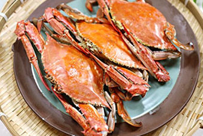

오늘 읽을만한 글
주제별로 분류된 다양한 글 모음
671개의 글
관심주제 설정

레시피
일찍 가야 맛볼 수 있는 편의점 아이스크림
편의점 아이스크림 10 아이스크림만큼 우리의 기분을 단시간에 좋아지게 만드는 게 있을까? 계절 상관없이 입 안을 시원하고 달달하게 해주는 아이스크림을 찾기 마련이다. 이 점...
데일리 .4일전

레시피
꽃게찌는법 비린맛 잡고 탱글탱글 찌는시간 우리 아이 최애 꽃게찜 요리
꽃게찌는법 비린맛 잡고 탱글탱글 찌는시간 우리 아이 최애 꽃게찜 요리 아빠가 막둥이에게 귓속말로 속닥속닥하니까 신난다고 오예를 외치는~ " #꽃게 사러 같이 갈래?" 이 말이...
산이맘 .1주일 전
레시피
박태준 셰프의 맥적의 탈바꿈
박태준 셰프는 하고 싶은게 많은 사람인 것 같다. 전통 한식의 기본 틀은 유지하면서도 서양식 조리법을 사용해 퓨전 한식을 만들어 내면서, 다양한 맛을 한 요리에 조화롭게 담아...
한국축산데이터 .5일 전